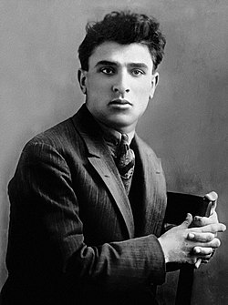
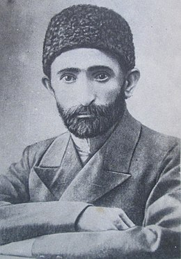
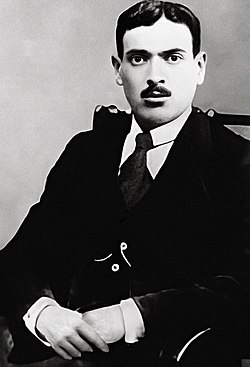

Səməd Vurğun (doğum adı: Səməd Yusif oğlu Vəkilov; 21 mart 1906, Yuxarı Salahlı, Qazax qəzası – 27 may 1956, Bakı) — Azərbaycan şairi, dramaturq, tərcüməçi, ədəbiyyatşünas, tənqidçi, Azərbaycanın ilk xalq şairi (1956), 2 dəfə "Stalin" mükafatı laureatı (1941, 1942) və 2 dəfə "Lenin" ordeni laureatı, Azərbaycan Yazıçılar İttifaqının sədri (1941–1948), Azərbaycan SSR Ali Sovetinin deputatı, Azərbaycanın Xarici Ölkələrlə Mədəni əlaqə Cəmiyyətinin sədri, Azərbaycan SSR EA-nın akademiki (1945) və vitse-prezidenti (1954–1956). Azərbaycan Elmlər Akademiyasının təsisçilərindən biridir.
Mikayıl Müşfiq (tam adı: Mikayıl Əbdülqadir oğlu İsmayılzadə; 5 iyun 1908, Bakı – 6 yanvar 1938, Bakı) — Azərbaycan şairi, tərcüməçisi və pedaqoqu, Azərbaycan Yazıçılar Birliyinin üzvü (1934), "Azərnəşr"in keçmiş redaktoru. Azərbaycan poeziyasının inkişafında böyük rol oynamış şairlərdən biridir. Sevgi və gözəlliyi tərifləyən bir çox şeirlərin müəllifidir. Onun şeirlərində sosial və mədəni məsələlər üzrə fikirlər də dilə gətirilirdi. Stalin repressiyasının qurbanı olub və 1938-ci ildə güllələnmişdir. 1956-cı il mayın 23-də SSRİ Ali Məhkəməsinin Hərbi kollegiyasının qərarına əsasən ölümündən sonra bəraət almışdır. Azərbaycan Respublikası Nazirlər Kabinetinin 7 may 2019-cu il tarixli, 211 nömrəli Qərarı ilə Mikayıl Müşfiq Azərbaycan Respublikasında əsərləri dövlət varidatı elan edilən müəlliflərin siyahısına daxil edilmişdir.[1]
Mirzə Ələkbər Sabir (doğum adı: Ələkbər Zeynalabdin oğlu Tahirzadə; 30 may 1862, Şamaxı – 12 iyul 1911, Şamaxı) — Azərbaycan şairi, inqilabçı-satirik, mütəfəkkir, ictimai xadim və müəllim.[1] Azərbaycan Respublikası Nazirlər Kabinetinin 7 may 2019-cu il tarixli, 211 nömrəli Qərarı ilə Mirzə Ələkbər Sabir Azərbaycan Respublikasında əsərləri dövlət varidatı elan edilən müəlliflərin siyahısına daxil edilmişdir.
Əhməd Cavad (Cavad Məhəmmədəli oğlu Axundzadə, 5 may 1892 və ya 1892[1], Aşağı Seyfəli, Yelizavetpol qəzası – 12 oktyabr 1937 və ya 1937[1], Bakı) — Azərbaycan şairi, tərcüməçi, AYB-nin üzvü (1934), professor (1933).[2] Azərbaycan Respublikası Nazirlər Kabinetinin 7 may 2019-cu il tarixli, 211 nömrəli Qərarı ilə Əhməd Cavad Azərbaycan Respublikasında əsərləri dövlət varidatı elan edilən müəlliflərin siyahısına daxil edilmişdir.[3]